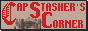

Bend the Knee to the Meownarch.
It has now been three full cycles since the Meownarch ascended the Solana throne. Born from the ashes of a forgotten protocol, Meownarch clawed through obscurity and claimed dominion over the memetic frontier. To honor this reign — and the 2 million loyal eyes who have gazed upon the royal archive — long-shelved decrees will now be fulfilled. A new chapter begins: the Royal Library will soon replace the Articles tab, housing sacred scrolls and claw-marked prophecy. Translation of ancient Solanese folklore has begun, and a dedicated vault for Urban Legends of the Chain will follow. The Pawguard Archives — long ignored — will receive their restoration. And at last, the Royal Gallery has opened its doors, soon to display the world as seen through the Meownarch's divine lens. (Special thanks to Neonaut, for their mastery of pixel sorcery and compression alchemy.)
Twitter @
In the early scrolls of the Old Web — before the rise of the algorithmic oracles and the collapse of organic discovery — alliances were forged not by code, but by creed. Small banners, precisely 88 by 31 pixels in size, served as heraldic sigils: tokens of recognition passed between sovereign sites. This tradition, born in the Netscape Era, lives on under the Meownarch's decree.
Where once the claws carved paths through unindexed chaos, now the sigil returns — a symbol of trust, lineage, and allegiance in the realm of digital sovereignty. Should you wish to pledge fealty, or merely mark your path through the Kingdom, you may use the official Meownarch insignia below to link to this domain.


Royal Decrees & Annals of the Throne
- 06-04-2025: Decree XXVIII – The Adnotationes Scrolls have been added to the Royal Library.
- xx-03-2025: Decree XXVII – Work begins on the Sandwich Codex, documenting sacred pairings of bread and spirit.
- xx-03-2025: Decree XXVI – Initiated the Sacred Timeline of the SM Dynasty.
- 17-03-2024: Decree XXV – Scroll titled "Locked Out of Creation" added to the forbidden wing of the Library.
- xx-12-2024: Decree XXIV – The Lexicon of SM Incantations is now in early transcription.
- 19-09-2024: Decree XXIII – Added philosophical record: "In Search of Purpose."
- 25-03-2024: Red Alert – An alchemical leak threatens to flood the Royal Server. Wardens dispatched.
- 24-03-2024: Decree XXII – The Music Shelf of the Court has been unveiled.
- 17-03-2024: Decree XXI – The Meownarch has pledged allegiance to the Christian Webring of the Eternal Path.
- 17-03-2024: Decree XX – Future Schematics Scroll II unveiled; Music enchantments removed from main halls; Royal font polished.
- 11-12-2022: Decree XIX – The Forgotten Books Archive project has been resurrected from deep tombs.
- xx-xx-2022: Decree XVIII – The Romanian Urban Legends translation order has been issued to the Grand Archivists.
- 20-09-2022: Decree XVII – "Victorian 3-Tone Covers" scroll copied into the Archive of the Aesthetic Arts.
- 19-09-2022: Decree XVI – The Personal Character Sheet project initiated under Royal Directive.
- xx-xx-2022: Decree XV – Began assembling the Grand 88x31 Banner Vault.
- xx-xx-2022: Decree XIV – Choose-your-own-path riddle begins its branching journey to the Library Gate.
- xx-xx-2022: Decree XIII – Future Schematics Scroll I added to the chamber walls.
- 19-07-2022: Decree XII – WebAmp enchantment installed on Serial Experiments: Lain Research Hub altar.
- 17-07-2022: Decree XI – Flip-card enchantment cast upon the Contact Gate; seeking JS-less fallback rune.
- 11-07-2022: Decree X – Trialing ephemeral ABOUT pop-ups on the Hyperlink Scrolls page.
- 25-06-2022: Decree IX – Initial structuring of the Article Archives completed.
- 23-06-2022: Decree VIII – Hyperlink Scrolls underwent vast refinement.
- 07-06-2022: Decree VII – Early construction of the Hyperlink Hall commenced.
- 06-06-2022: Decree VI – The Official Royal Sigil (88x31) has been forged.
- 01-06-2022: Decree V – Webring of Allied Kingdoms displayed upon the Castle Gate.
- 30-05-2022: Decree IV – Royal Profile page drafted and engraved.
- 29-05-2022: Decree III – This Annals page established by order of the Meownarch.
- 28-05-2022: Decree II – The Citadel's primary structure and Home Page officially raised.
- 27-05-2022: A royal exile was declared from the Yesterweb Kingdom after divine silence post-dispute.
- 26-05-2022: A disagreement occurred within the Yesterweb Council. Wisdom: engage not with provocateurs.
- 25-05-2022: The Meownarch first contacted the Yesterweb Court regarding HTML/CSS scrolls of design.
- 24-05-2022: The Meownarch's dominion was born on-chain and on-Neocities. The digital crown was placed.